Serval WS (Parts & Repairs)
Many components in your Serval WS can be upgraded or replaced as necessary. This page uses photos of the 15" model, but screw counts, general component locations, and other details are the same on the 17" model unless otherwise noted.
- Removing the bottom cover
- Replacing the battery
- Replacing the keyboard
- Replacing the RAM
- Replacing an M.2/NVMe SSD
- Replacing the fans/heatsink/thermal paste
- Replacing the WiFi/Bluetooth module
- Replacing the CMOS battery
- Replacing the speakers
Removing the bottom cover:
Removing the cover is required to access the internal components. Prior to removing the cover, ensure the AC power is unplugged and all peripherals (including SD cards and USB drives) are unplugged or removed from the system.
Tools required: Cross-head (Phillips) screwdriver
Time estimate: 5 minutes
Difficulty: Easy ●
Steps to remove the bottom cover:
- Place the machine lid-side down.
- Use a soft surface (such as a towel) to avoid scratches.
- Remove the 15 bottom panel screws.
- All screws are the same length on any given unit. However, the 17" model uses longer screws than the 15" model.
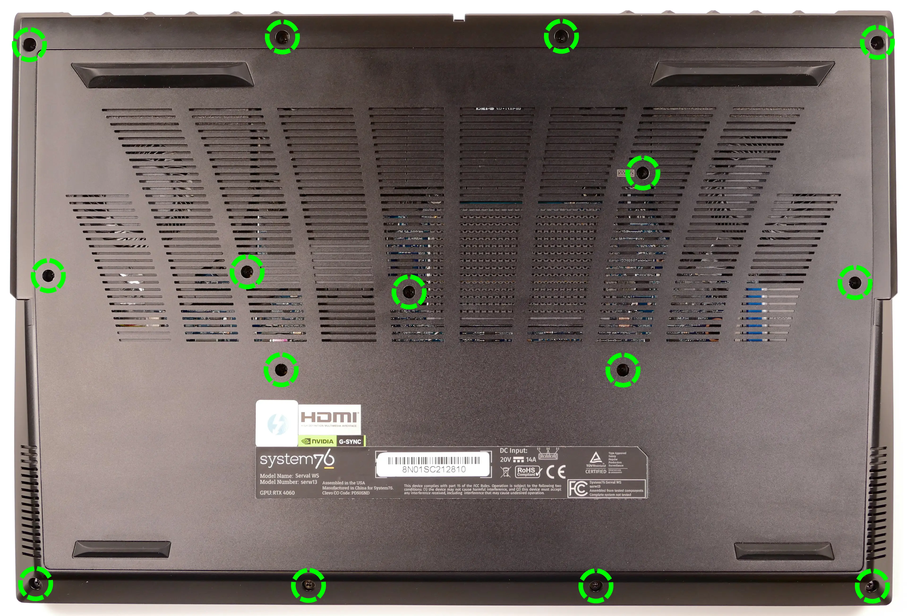
- Pull the bottom panel off, starting from the hinges in the back.
Replacing the battery:
The battery provides primary power whenever the system is unplugged.
Tools required: Cross-head (Phillips) screwdriver
Time estimate: 10 minutes
Difficulty: Easy ●
Steps to replace the battery:
- Follow the steps above to remove the bottom cover.
- Remove the three silver battery screws along the bottom of the battery.
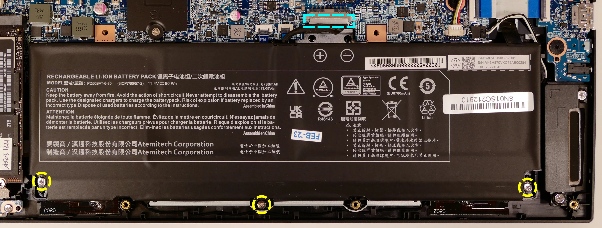
- Unplug the white connector (highlighted cyan above) connecting the battery to the motherboard.
- Remove the battery, starting from the bottom edge with screw holes.
- When putting in the new battery, start with the plastic tabs along the top edge (opposite from the screw holes.)
- When plugging in the new battery, the red wire on the connector goes on the left, and the black wire goes on the right.
Replacing the keyboard:
The keyboard can be replaced using the instructions below.
Tools required: Cross-head (Phillips) screwdriver; tweezers (optional)
Time estimate: 10 minutes
Difficulty: Medium ●
Steps to replace the keyboard:
- Follow the steps above to remove the bottom cover.
- Pull the keyboard adhesive out of the machine to detatch it from the keyboard.
- The adhesive strip access point is highlighted green below.
- If the end of the keyboard adhesive strip is tucked behind the fan, it can be pulled out using tweezers or a small screwdriver, or the thermal system can be removed to expose it.
- Replacing the thermal paste is recommended if the thermal system is removed.
- If the adhesive strip breaks, remove as much of it as possible. The keyboard can be reinstalled without the adhesive strip.
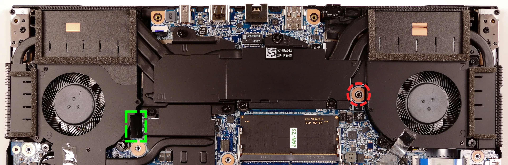
- Open the lid slightly and place the machine on its side.
- Push the screwdriver into the keyboard push point (highlighted red above) until the keyboard pops out.
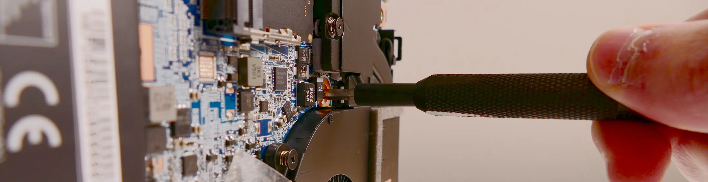
- Set the machine back down and raise the keyboard away from the chassis. The larger ribbon cable is for the keyboard, while the smaller ribbon cable is for the keyboard backlight.
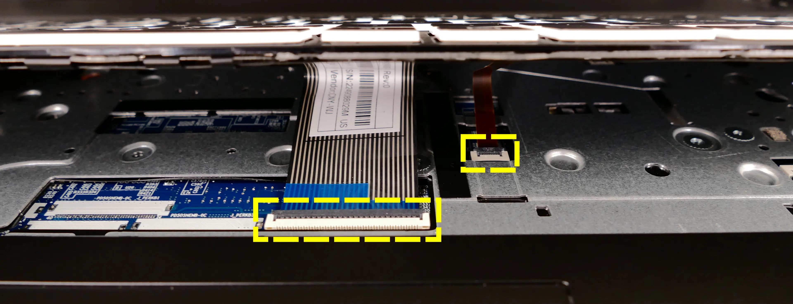
- Flip the black latches upwards to free the ribbon cables.
- Pull the ribbon cables out of the connectors.
- Remove the keyboard and replace it with the new one.
- Carefully slide both ribbon cables into their connectors.
- Flip the black latches back into place to secure the ribbon cables.
- (Optional) Replace the keyboard adhesive strip on the chassis.
- Place the keyboard back into position, starting with the tabs on the bottom edge.
- Secure the rest of the keyboard by pressing down on each of its edges.
- Turn the machine lid-side down again.
- Replace the bottom panel.
Replacing the RAM:
The Serval WS 13 supports up to 64GB (2x32GB) of DDR5 SO-DIMMs running at 5600MHz. If you've purchased new RAM, need to replace your RAM, or are reseating your RAM, follow these steps.
Tools required: Cross-head (Phillips) screwdriver
Time estimate: 10 minutes
Difficulty: Easy ●
Steps to replace the RAM:
- Follow the steps above to remove the bottom cover.
- Press the small tabs on both sides of the RAM simultaneously. The RAM should spring up to an angle.
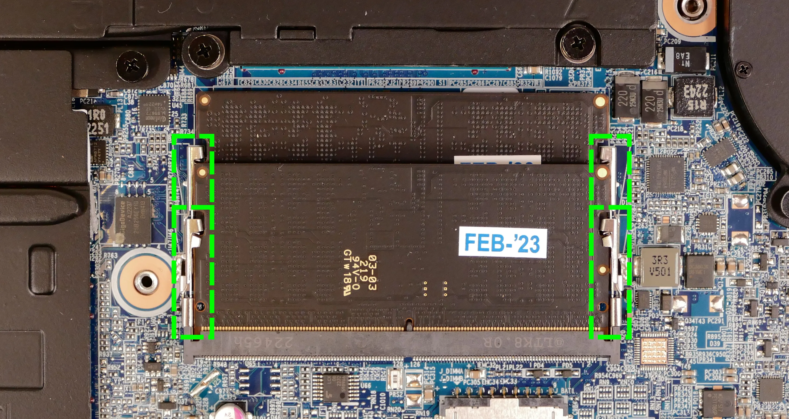
- Remove the RAM from the slot.
- Insert the new RAM (or reseat the existing RAM) by placing it in the keyed slot and pressing down on the RAM until it clicks into place.
Replacing an M.2/NVMe SSD:
This model supports up to two M.2 SSDs. Both M.2 slots are size 2280 and support PCIe NVMe Generation 4.
Tools required: Cross-head (Phillips) screwdriver
Time estimate: 10 minutes
Difficulty: Easy ●
Steps to replace the M.2 drive:
- Follow the steps above to remove the bottom cover.
- Unscrew the retainer screw opposite the M.2 slot.
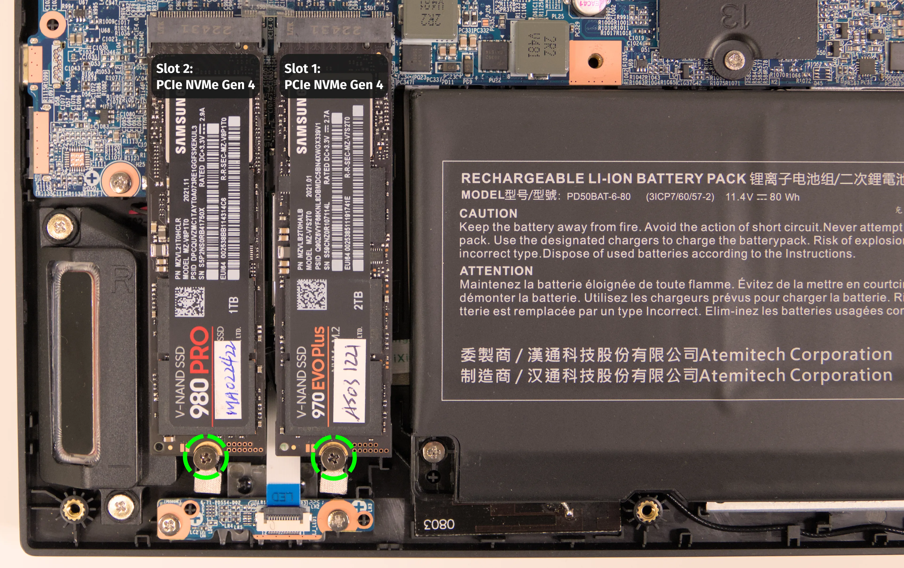
- Remove the existing M.2 drive by pulling it out of the slot.
- Insert the new M.2 drive into the slot and hold it in place.
- Replace the retainer screw.
Replacing the cooling system:
The Serval WS 13 has a single heatsink assembly with two fans. This assembly cools the CPU and GPU.
If the fans become noisy and cleaning them out doesn't fix the issue, you may need a new fan. Contact support to start a warranty claim or parts purchase.
Depending on your climate and the age of the machine, it may be necessary to apply new thermal paste between the CPU/GPU and the heatsink. Thermal paste helps facilitate effective heat transfer between the CPU/GPU and the cooling equipment. These instructions can also be used in the unlikely event your heatsink needs to be replaced.
Tools required: Cross-head (Phillips) screwdriver
Time estimate: 15 minutes
Difficulty: High ●
Steps to replace the heatsink/thermal paste:
- Follow the steps above to remove the bottom cover.
- Remove the thirteen heatsink and fan screws in order of the stamped numbers, starting with #1, then #2, and continuing until you have removed #13.
- The black screws (#1-#12) are held captive, and will not completely detatch from the heatsink/fans. The silver screw (#13) is not held captive, and will come loose when untightened.
- Do not remove the smaller black screws holding the fan covers onto the fans.
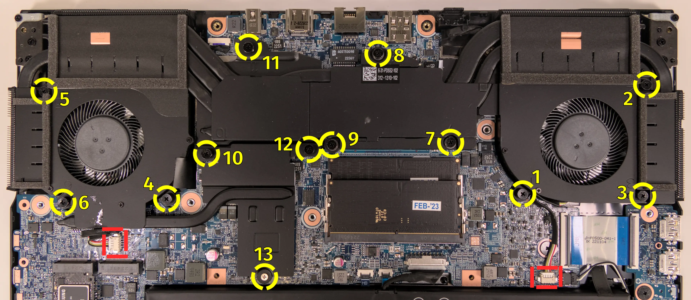
- Unplug the white fan connectors from the motherboard.
- Remove the heatsink/fans from the case, being careful not to bend the heatsink pipes. It may take some pressure to break the seal of the thermal paste.
- Using a paper towel, remove the existing thermal paste from the CPU, GPU, VRAM chips, and heatsink. You may also use a small amount of rubbing alcohol if the old paste is dried or difficult to remove.
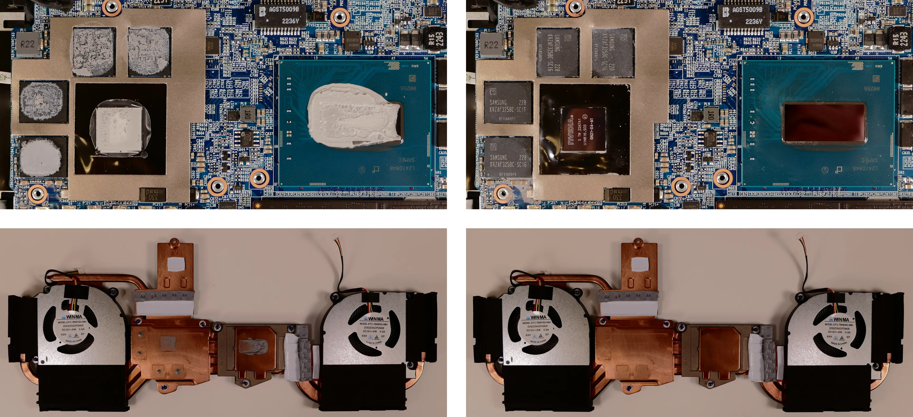
- Apply a small line of thermal paste directly onto the CPU chip, GPU chip, and VRAM chips.
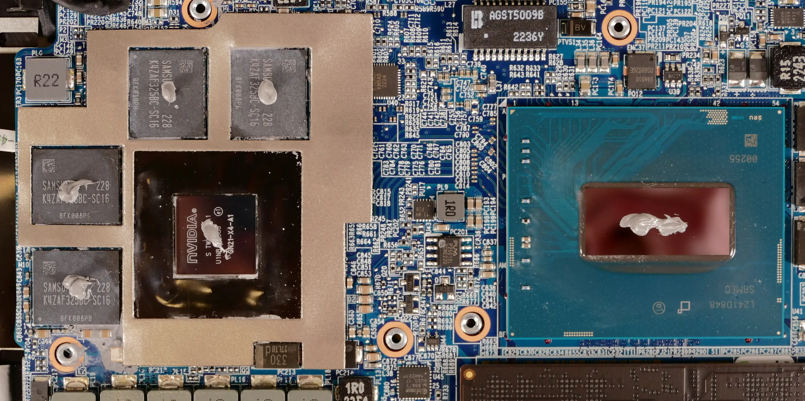
- Carefully replace the heatsink.
- Replace the fan and heatsink screws, starting with #1, then #2, and so on until #13.
- Plug the white fan connectors back into the motherboard.
Replacing the wireless card:
Your Serval WS's WiFi and Bluetooth are both handled by the same module. It is a standard M.2 2230 slot with PCIe and USB interfaces (A Key).
Tools required: Cross-head (Phillips) screwdriver
Time estimate: 10 minutes
Difficulty: Medium ●
Steps to replace the WiFi/Bluetooth module:
- Follow the steps above to remove the bottom cover.
- If there is an M.2 SSD in the slot closest to the battery, follow the steps above to remove the M.2 SSD.
- The other SSD can optionally be removed to make working with the wireless card easier.
- Locate the wireless module. Remove any clear tape that is securing the wires.
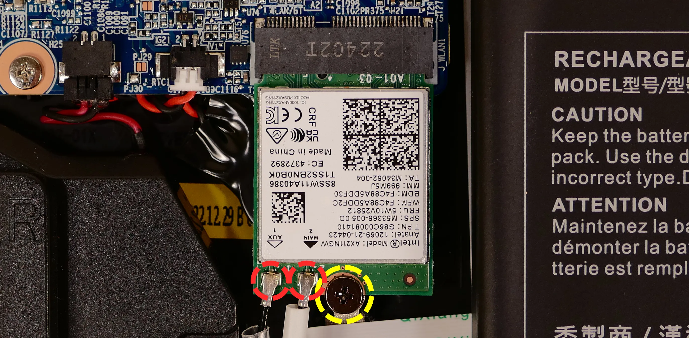
- Gently remove the two antennas (highlighted red above) by pulling them up and away from the wireless card.
- Remove the retaining screw opposite the M.2 slot, highlighted yellow above.
- Slide the card out of the M.2 slot, parallel with the motherboard.
- Insert the new wireless card into the M.2 slot.
- Replace the retaining screw.
- Attach the two antennas by aligning the circular fittings and pressing onto the wireless card. The connectors will snap into place. Use caution when attaching the connectors; the pins can bend, break, or snap.
- Replace the M.2 SSD, bottom cover, and battery.
Replacing the CMOS battery:
The CMOS battery supplies power to the system's CMOS chip. UEFI settings and the comptuer's hardware clock are stored on the CMOS. If your system doesn't boot, you can reset the CMOS to force a low-level hardware reset. If your clock is constantly resetting, it's likely your CMOS battery needs to be replaced.
Tools required: Cross-head (Phillips) screwdriver
Time estimate: 10 minutes
Difficulty: Easy ●
Steps to replace the CMOS battery:
- Follow the steps above to remove the bottom cover, unplug the main battery, and remove the outermost SSD.
- Remove the innermost SSD and remove the wireless card, then pull the battery away from the adhesive holding it to the case.
- If you are not replacing the CMOS battery, then this step is optional.
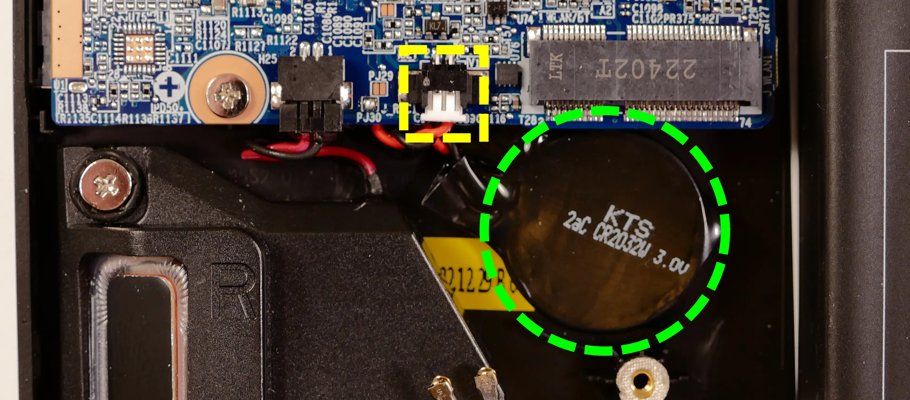
- Unplug the white connector that connects the CMOS battery to the motherboard.
- To clear the CMOS, open the lid of the machine and hold down the power button for at least 15 seconds to discharge any residual energy in the system.
- Re-connect the CMOS battery and the main battery.
- Replace the SSDs and wireless card (if necessary) and the bottom panel.
- Power up the Serval WS. The system may power itself off and on after initial boot; this is normal behavior when the CMOS has been reset.
Replacing the speakers:
The system has two bottom-firing speakers, which can be removed and replaced individually.
Tools required: Cross-head (Phillips) screwdriver
Time estimate: 10 minutes
Difficulty: Medium ●
Steps to replace the left speaker:
- Follow the steps above to remove the bottom cover.
- Disconnect the speaker connector from the motherboard.
- This can alternatively be done after freeing the speaker.
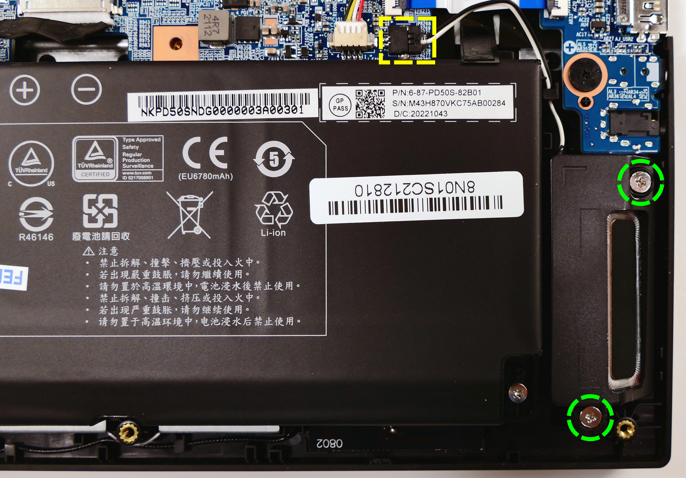
- Unscrew the two speaker screws, free the speaker wire from the channels in the chassis, and remove the speaker.
- Screw in the new speaker and connect it to the motherboard, securing the wire using the channels in the chassis.
- Replace the bottom cover.
Steps to replace the right speaker:
- Follow the steps above to remove the bottom cover and remove the outermost SSD.
- Peel back any clear tape hanging onto the speaker from the wireless card.
- Disconnect the speaker connector from the motherboard.
- This can alternatively be done after freeing the speaker.
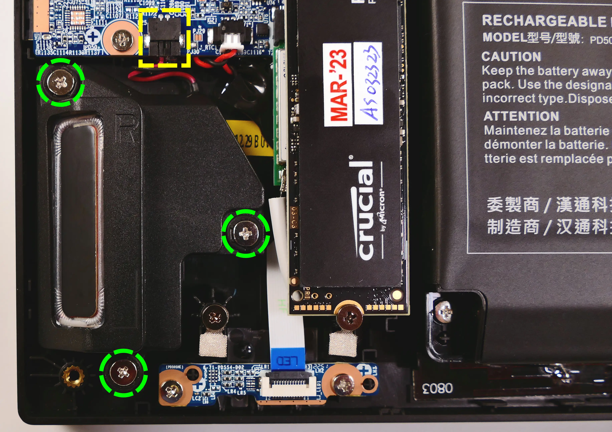
- Unscrew the three speaker screws and remove the speaker.
- Screw in the new speaker and connect it to the motherboard.
- Replace the outermost SSD (if necessary) and bottom cover.